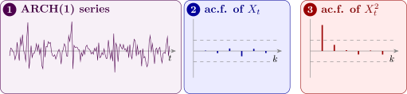

18.1 The ARCH and GARCH models
Definition 18.1.1. A process follows an ARCH(\(p\)) model, short for autoregressive conditional heteroscedasticity, if \[ X_t = \sigma _t\,\varepsilon _t , \qquad \sigma _t^2 = \alpha _0 + \sum _{i=1}^p\alpha _iX_{t-i}^2 , \] where \(\varepsilon _t\) is independent white noise with unit variance, \(\alpha _0 > 0\) and \(\alpha _i \ge 0\). The GARCH(\(p, q\)) extension adds lagged variances, \[ \sigma _t^2 = \alpha _0 + \sum _{i=1}^p\alpha _iX_{t-i}^2 + \sum _{j=1}^q\beta _j\sigma _{t-j}^2 . \]
Here \(\sigma _t^2\) is the conditional variance of \(X_t\) given the past: a large value of \(X_{t-1}\), positive or negative, raises the variance of \(X_t\), so large changes tend to be followed by large changes.
Theorem 18.1.2 (Properties of ARCH(1)). For the ARCH(1) model with \(0 \le \alpha _1 < 1\):
- (i)
- \(E(X_t) = 0\), \(\Var (X_t) = \dfrac {\alpha _0}{1 - \alpha _1}\), and \(\Corr (X_t, X_{t+\tau }) = 0\) for \(\tau \ne 0\);
- (ii)
- \(X_t^2\) is autocorrelated, following an AR(1) in the squares;
- (iii)
- if \(\varepsilon _t\) is normal and \(3\alpha _1^2 < 1\), the kurtosis of \(X_t\) is \[ \frac {E(X_t^4)}{\bigl (E(X_t^2)\bigr )^2} = \frac {3(1 - \alpha _1^2)}{1 - 3\alpha _1^2} > 3 , \] so \(X_t\) has heavier tails than a normal variable.
Proof. (i) Conditioning on the past, \(E(X_t \mid \mathcal {F}_{t-1}) = \sigma _tE(\varepsilon _t) = 0\), so \(E(X_t) = 0\) by the tower property, and \(X_t\) is uncorrelated with anything earlier, which gives the zero autocorrelation. For the variance, \(E(X_t^2) = E(\sigma _t^2) = \alpha _0 + \alpha _1E(X_{t-1}^2)\). Stationarity makes both expectations equal, so \(E(X_t^2)(1 - \alpha _1) = \alpha _0\), giving the stated variance and requiring \(\alpha _1 < 1\) for it to be finite and positive.
(ii) Writing \(\eta _t = X_t^2 - \sigma _t^2\), which has mean zero given the past, the definition rearranges to \[ X_t^2 = \alpha _0 + \alpha _1X_{t-1}^2 + \eta _t , \] an AR(1) for the squared series.
(iii) With normal \(\varepsilon _t\), \(E(\varepsilon _t^4) = 3\), so \(m_4 = E(X_t^4) = 3E(\sigma _t^4) = 3E(\alpha _0 + \alpha _1X_{t-1}^2)^2 = 3(\alpha _0^2 + 2\alpha _0\alpha _1m_2 + \alpha _1^2m_4)\), with \(m_2 = \alpha _0/(1 - \alpha _1)\). Solving, \(m_4(1 - 3\alpha _1^2) = 3\alpha _0(\alpha _0 + 2\alpha _1m_2) = 3\alpha _0^2\frac {1 + \alpha _1}{1 - \alpha _1}\), and dividing by \(m_2^2 = \alpha _0^2/(1 - \alpha _1)^2\) gives \(3(1 + \alpha _1)(1 - \alpha _1)/(1 - 3\alpha _1^2)\), which exceeds \(3\) when \(\alpha _1 > 0\) because \(1 - \alpha _1^2 > 1 - 3\alpha _1^2\). □
Part (ii) is the whole point. The series itself is uncorrelated (it passes every test built on the autocorrelation function) while its squares are strongly correlated. A series can therefore be unpredictable in level and entirely predictable in volatility, which is what makes returns look random while their risk does not. Part (iii) explains another familiar feature of financial data: occasional very large values, more than a normal distribution would produce.
This is also the practical diagnostic: plot the ac.f. of the squared residuals after fitting an ARMA model. If it is flat the constant-variance assumption stands; if it decays slowly, an ARCH or GARCH term is needed. Nothing in the ordinary residual ac.f. would have revealed it (Figure 16).

Proposition 18.1.3. For the GARCH(1,1) model \(\sigma _t^2 = \alpha _0 + \alpha _1X_{t-1}^2 + \beta _1\sigma _{t-1}^2\) with \(\alpha _1 + \beta _1 < 1\), the unconditional variance is \(\alpha _0/(1 - \alpha _1 - \beta _1)\).
Proof. Take expectations, using \(E(X_{t-1}^2) = E(\sigma _{t-1}^2) = v\) by stationarity: \(v = \alpha _0 + \alpha _1v + \beta _1v\), so \(v = \alpha _0/(1 - \alpha _1 - \beta _1)\). □
In practice \(\alpha _1 + \beta _1\) is often close to \(1\) for financial returns, which means shocks to volatility die out slowly. GARCH(1,1) with three parameters usually fits as well as an ARCH model with many lags, the same parsimony that ARMA offers over pure AR.
Example 18.1.4. Daily returns follow an ARCH(1) model with \(\alpha _0 = 0.2\) and \(\alpha _1 = 0.5\) (in squared per cent). Find the unconditional variance and kurtosis, and give a \(95\%\) interval for tomorrow’s return after a day with \(X_n = 1.5\) and after a day with \(X_n = 0\).
Solution. \(\Var (X_t) = 0.2/(1 - 0.5) = 0.4\), a standard deviation of \(0.63\). The kurtosis is \(3(1 - 0.25)/(1 - 0.75) = 9\), three times the normal value: extreme returns are far more common than a normal model with the same variance would suggest.
Tomorrow’s conditional variance is \(\sigma _{n+1}^2 = 0.2 + 0.5X_n^2\). After \(X_n = 1.5\) it is \(0.2 + 0.5(2.25) = 1.325\), a standard deviation of \(1.151\), so the interval is \(\pm 1.96(1.151) = \pm 2.26\). After \(X_n = 0\) it is \(0.2\), a standard deviation of \(0.447\), and the interval is \(\pm 0.88\). The forecast of the return is \(0\) in both cases, but its uncertainty differs by a factor of \(2.6\). The unconditional interval, \(\pm 1.96(0.63) = \pm 1.24\), is too wide after a quiet day and much too narrow after a turbulent one.
Questions on this section
Stuck on something here? Ask below and it stays attached to this topic.